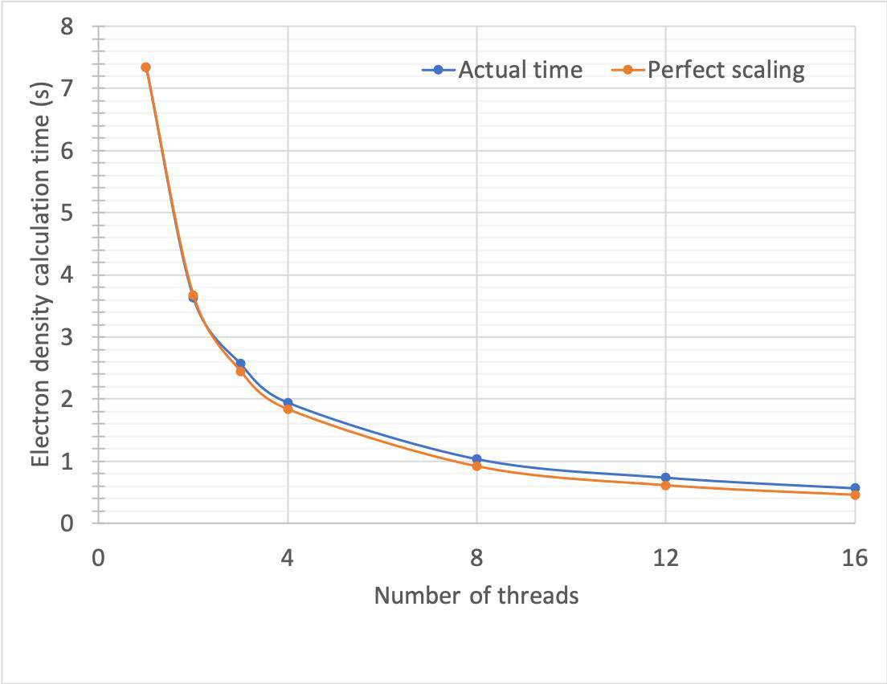

Real-time crystallographic map recalculation (EXPERIMENTAL)
New in 1.0b3: parallelised structure factor calculations, and more
In ISOLDE 1.0b3 the key steps in the calculation of new structure factors are parallelised across all available CPU cores. The net effect of this is much faster and smoother map updates when working with experimental structure factors. On a 16-core Xeon E5-2687W workstation, simulations of the 3io0 demo model now see about 1.8 map updates per second. In particular, the key step of calculating a simulated map from the current coordinates parallelised really well (times are for 6ap4 with all hydrogens, on the same machine - 94,574 atoms in space group P 1 21 1, 2.95 Angstrom resolution):

Other updates: experimental reflections can now be provided as your choice of intensity or amplitude data. Anomalous data will be automatically merged, and intensities converted to amplitudes using the analytical French & Wilson method pioneered in Read & McCoy (2016) Acty Cryst D72(3): 375-387. Reflection data can be loaded in .cif or .mtz format, and saved as .mtz. In addition, essentially any model with structure factors can be loaded directly from the wwPDB with the ChimeraX command, "open xxxx structureFactors true".
As of version 1.0b2, loading an MTZ file containing F/sigF experimental data and free flags will trigger ISOLDE to generate a set of live-updating maps. Map recalculation is triggered by any change to atomic coordinates, B-factors or occupancies, and is threaded to ensure minimal disruption to the main GUI interface. While not a substitute for complete refinement, live map calculations allow you to rapidly evaluate conformational hypotheses and can often expose errors that would otherwise be hidden by model bias.
(Note: this feature is new, and still experimental. The underlying map calculations make no attempt to correct for errors or pathologies in the data - e.g. twinning, ice rings, anisotropy, incompleteness etc.. For best results with live maps, you will need to provide an experimental F/sigF dataset that is either naturally free of severe issues, or has been pre-processed to account for them)